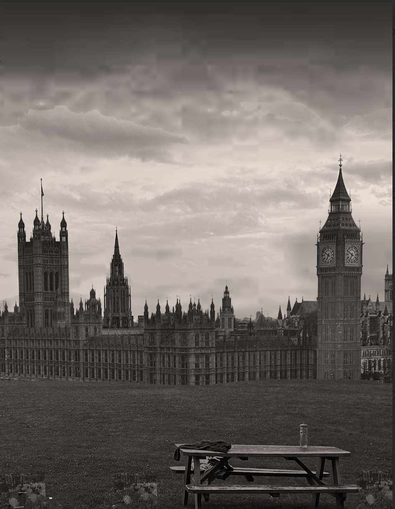

Digital Media Portfolio Project
By: Justin Platt
My Work
Logos:


The first logo I made I wanted it to be more personal and intricate. I liked how not all the lines are exactly even are some are slanted. My favorite logo was the new Coca-Cola logo based off of my mood board. I think that this logo is simple with its shapes. At its core I started with two circles using the company colors of red and black. I then added the triangle shape on a different layer than the black circle to give it a look of overlay. I think what especially ties it together is the font of the letters. My moodboard was based on the evolution of Coca-Cola throughout the years. I think that my photo reflects this idea keeping the old colors but with a new font and a new take on the logo. I think both the logos are unique and represnt two different projects and aspects of Digital Media.
Moodboard Project:

My project was made to reflect a new Coca-Cola marketing campaign about their products in different locations. I used a mood board template labeled summer because of its red background and the spacing of the photos. The spacing was important because I wanted enough photos to show the evolution of Coca-Cola while reflecting the other idea of the different locations where you would buy Coke like a restaurant or a supermarket. In the mood board I put the locations in the middle of the board and the pictures on the outside to show how the different eras of the product are connected by location which promotes the central idea of the mood board. The pictures themselves are each unique and most of them in the mood board have the Coke bottle or can in the center of the photo while parts of the background can follow the rule of thirds. The pictures of the locations have a wide landscape. The purpose is to show people in these locations and search for the product that is marketed in the mood board. The red and black is part of the staple logo and that is reflected in the mood board with black stripes on the top having the original neon logo and on the bottom it has the 4 colors in the color palette that is included in these photos. Finally, the mood board and the words are meant to show the different places where the product is found. Each different product from different time periods helps show evolution in the product and also the change the mood boards shows having new products in similar places.
AI Art
 In the first panel the villain Skull Man looked over Metro City menacingly planning his next attack. Viciously he spots his target and makes his way down the building. As the kid Jasper is walking out of his house at night getting a snack Skull Man lands behind him and intercepts him while he is walking, kidnapping him for his evil plan. Clark Wayne receives a phone call from his sidekick who informs him of Skull Man’s kidnapping and his plan to take over the city. Clark Wayne goes to his lockers to get his red suit turning him into Metro Man when his hood goes up. Looking over his building onto the town he lands on Skull Man. They have a huge battle and Metro Man defeats Skull Man with a big punch. Metro Man as a hero takes home Jasper and saves Metro City.
In the first panel the villain Skull Man looked over Metro City menacingly planning his next attack. Viciously he spots his target and makes his way down the building. As the kid Jasper is walking out of his house at night getting a snack Skull Man lands behind him and intercepts him while he is walking, kidnapping him for his evil plan. Clark Wayne receives a phone call from his sidekick who informs him of Skull Man’s kidnapping and his plan to take over the city. Clark Wayne goes to his lockers to get his red suit turning him into Metro Man when his hood goes up. Looking over his building onto the town he lands on Skull Man. They have a huge battle and Metro Man defeats Skull Man with a big punch. Metro Man as a hero takes home Jasper and saves Metro City.
Artist Statement: AI can usually make surface level art or photos but nothing after that unless you use a lot of prompts or editing. I think that AI helped to turn my creative idea for the comic into a reality. AI takes human ideas and creativity to create something. AI cannot replace human creativity because humans power the AI in creating it with code but also with the prompts that help develop them. All these aspects come from human creativity and it will always stem as a part of AI. The ethics of this also play a role as humans may value human creativity more than that of an AI. I think we still need human creativity and if it was all AI it would have less emotion behind it and it would just be a generated prompt where that's the only idea, instead of with human artwork every stroke of a brush can show different things. These details AI cannot master at this point so I think for now it's not going to be able to recreate human creativity.
Visual Storytelling Project
 Our project was made to put the viewer’s eyes through the lens of our school librarian , Ms.Mendlowits’ everyday life. Our librarian opens the door to the library, and we decided to use straight vertical lines to emphasize the simplicity. Our second picture shows a scene where Ms.Mendlowitz brings her books in for the day to read and we decided to use rule of thirds to emphasize the librarian. Similar to our second picture, our third shows the daily tasks of the librarian everyday, so we decided to use horizontal straight lines to add to the simplicity. The fourth picture is meant to show how the bookshelves look after the librarian does her work and we used framing to add emphasis on the books. Our 5th picture represents the library as the day passes. People begin to accumulate during lunch and it begins to get crowded. We also used the rule of thirds to emphasize the groups of people who come during lunch. Our last picture is supposed to represent the library during the 9th period. We decided that emphasizing shudder was a fair way to represent the flocks of people since we wanted to put emphasis on the chaos and obstinacy.
No-Face Self Portrait/Collage Project:
Our project was made to put the viewer’s eyes through the lens of our school librarian , Ms.Mendlowits’ everyday life. Our librarian opens the door to the library, and we decided to use straight vertical lines to emphasize the simplicity. Our second picture shows a scene where Ms.Mendlowitz brings her books in for the day to read and we decided to use rule of thirds to emphasize the librarian. Similar to our second picture, our third shows the daily tasks of the librarian everyday, so we decided to use horizontal straight lines to add to the simplicity. The fourth picture is meant to show how the bookshelves look after the librarian does her work and we used framing to add emphasis on the books. Our 5th picture represents the library as the day passes. People begin to accumulate during lunch and it begins to get crowded. We also used the rule of thirds to emphasize the groups of people who come during lunch. Our last picture is supposed to represent the library during the 9th period. We decided that emphasizing shudder was a fair way to represent the flocks of people since we wanted to put emphasis on the chaos and obstinacy.
No-Face Self Portrait/Collage Project:
 The first of the four images I decided to use for my collage project was the picture of the London Skyline. I took this photo while on the London eye, which is a huge ferris wheel that goes up above the city allowing me to capture this image. I also used a photo of the field with bunks in the background as the sun sets. This photo was taken while I was at sleepaway camp over the summer and it's an important part of my life as I have met a lot of my closest friends there. The third photo that I used was the photo of the gray sky. This photo was taken while I was on the plane and above the clouds. This image is important to me because it was taken on my way to California which was a very memorable experience for me. Finally, I used the photo of the flowers in the field which I took over 7 years ago. This photo reminds me of when I was in elementary school and taking photos of the park on my iPhone 7. All the photos that I selected for this project represent me in some way and I used them to make a cohesive image that blends all four. First off, I used the lasso tool to cut out the unwanted parts of the picture. I wanted the mood to represent someone coming over a hill to see medieval England. To do this I used the texture of the field and added flowers to enhance the mood. I then decided to use an adjustment layer and a black and white layer to recolor the image. Lastly, I changed the opacity on the flowers so they would be more transparent allowing them to more seamlessly blend into the field. My project uses layer masks, adjustment layers, tools and layer placement to have four distinct photos that represent me combined into one blended image that uses all of them to make this no face self portrait.
My Digital Media Reflection
This year in Digital Media we completed a variety of projects that were each tied to different parts of using cameras, or technology to create art. Our first projects were the Collage Project and the Name Project. Both projects allowed us to use the cameras and photos from our camera role to make stories and art that were related to me indiviually. I think that these projects allowed me to use the cameras in a creative way while still having the project tied to me. For the logo project using a different type of technology on Adobe was interesting. Illustrator was fun to use and the logos being related to ourselves and other Digital Media projects such as the mood board project. Throughout this year in Digital Media we used a variety of tools such as cameras and applications like Adobe Photoshop and Illustrator. This variety allowed us to create art in a variety of different ways with different arstici styles when using cameras, AI, coding, computers and more.